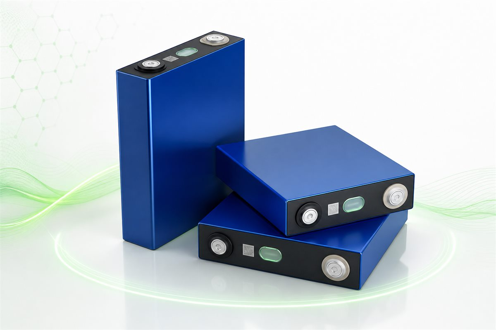
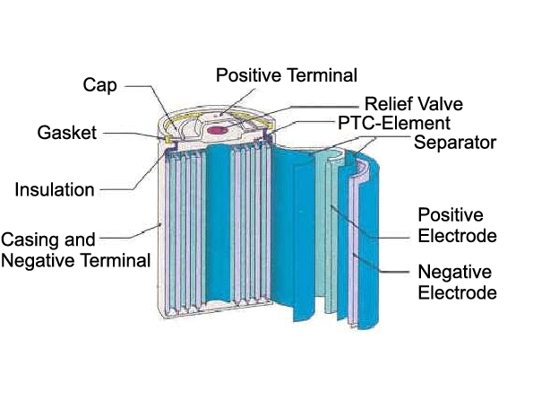
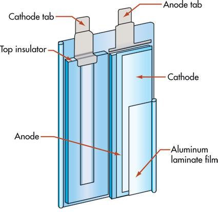
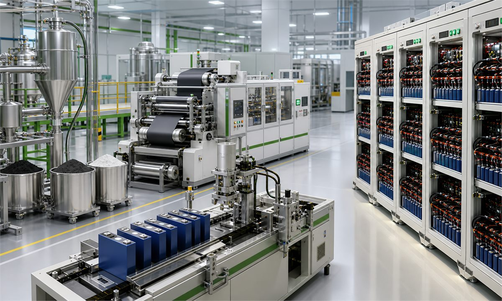
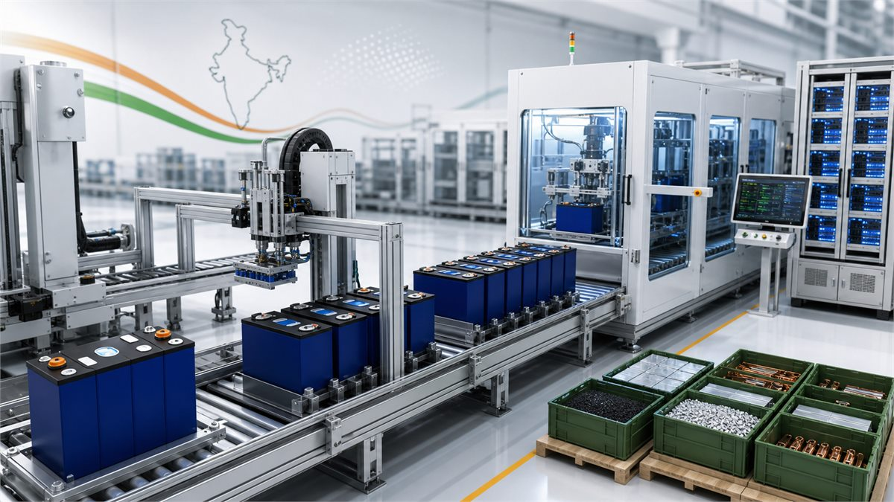

Prismatic Cell Architecture
High-capacity cell platforms for Energy Storage Systems, industrial applications, renewable energy integration and utility-scale storage.
Technology
LiFePO4 (LFP) cell technology is the core foundation of Jyothsna Li-Tech Pvt Ltd's battery roadmap. The focus is not product listing; it is cell architecture understanding, manufacturing process discipline, safety validation and an R&D pathway required to build domestic battery capability.

Technology Focus Areas
Focused technology streams cover prismatic, cylindrical and pouch lithium-ion cells, selected for different power, energy density, packaging and scale requirements.
High-capacity cell platforms for Energy Storage Systems, industrial applications, renewable energy integration and utility-scale storage.

Spirally wound cell design with casing, separator, positive and negative electrodes, safety venting and terminal structure for robust lithium-ion applications.

Lightweight cell structures suitable for next-generation energy storage, high energy density applications and emerging battery platforms.
Process Knowledge
The technology foundation includes understanding of raw material ecosystems, electrode preparation, coating behavior, cell assembly, electrolyte handling, formation, aging, grading and quality validation.

Localization
The objective is to localize technology, validate processes, develop Indian supply chain participation and reduce strategic dependence on imported battery ecosystems.

Production Flow
A clean view of the major production stages from raw materials to validated cells. This is designed for readability, not as a dense engineering drawing.
Active materials, binders, solvents and conductive additives prepared for slurry mixing.
Slurry coating, drying, calendaring and electrode sheet preparation.
Stacking or winding, tab welding, enclosure preparation and electrolyte filling.
Initial charging, activation, aging and stabilization of electrochemical performance.
Capacity grading, safety checks, internal resistance testing and quality validation.
Approved cells move toward module, pack and application-specific integration.
Solid-state battery technology is positioned as a future production phase after lithium-ion process validation, focusing on higher energy density, improved safety and advanced cell architecture.
Future Technology Roadmap
Evaluation of next-generation lithium-ion chemistries for performance, cost and manufacturability.
Improved safety behavior, thermal management and reliability for Indian operating conditions.
Development pathways for higher charge acceptance, cycle life and application-specific duty cycles.
Long-term research direction toward solid-state battery platforms and high energy density architectures.
The core goal is repeatable Indian cell manufacturing supported by chemistry knowledge, process control and validation systems.